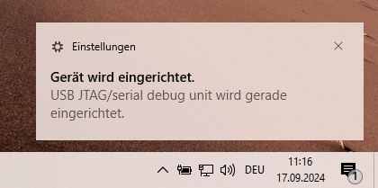
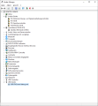
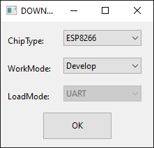
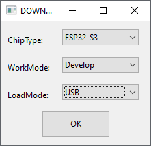
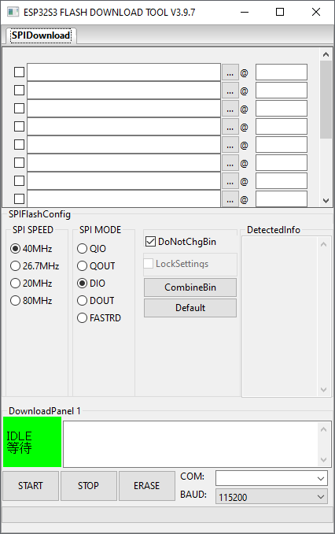
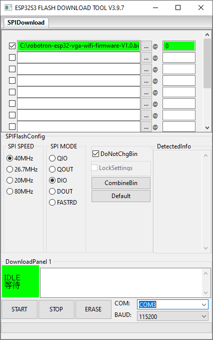
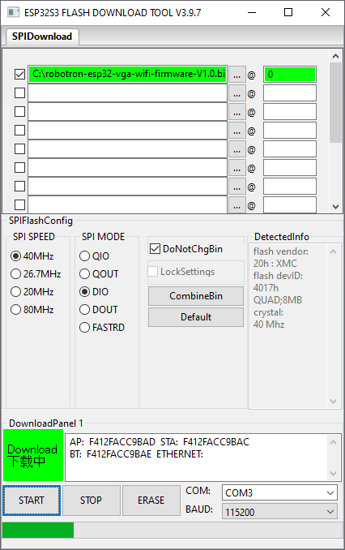
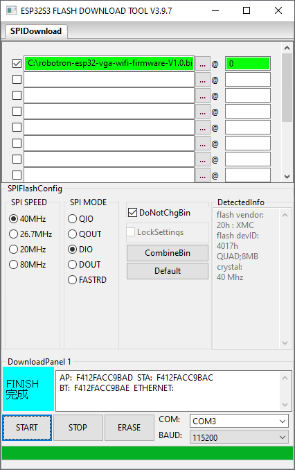

Hinweise zum Flashen der Firmware unter Windows
1. Die "Flash Download Tools" von Espressif herunterladen und auspacken.
2. Ein Firmware-Image herunterladen.
3. Den Robotron-ESP-Adapter am USB anstöpseln. Den BOOT Jumper vor dem Flashen NICHT stecken!
Beim ersten Mal wird Windows ein neues Gerät finden

4. Gegebenenfalls im Gerätemanager überprüfen welcher COM-Port das ist.

Bei eingen Windows-Installationen wird zwar der Robotron-ESP-Adapter als Gerät erkannt, es kann aber kein passender Treiber gefunden werden. Es ist keine allgemein gültige Maßnahme zur Behebung dieses Problems bekannt. Im Internet sind mehrere Beiträge zu diesem hema zu finden, von denen aber keiner eine befriedigende Lösung bietet. Wer kann, sollte einfach einen anderen Rechner probieren.
5. Das Flash-Programm starten.

6. "ESP32S3" und "USB" auswählen

7. "OK" klicken

8. Erste Zeile anhaken, Firmware-Image anwählen, Startadresse "0" eintragen, COM-Port auswählen.

9. "Start" klicken, warten

10. Flash fertig

11. Den Robotron-ESP-Adapter vom USB abziehen, den BOOT-Jumper stecken (=Schreibschutz). Danach ist der Adapter betriebsbereit.
Hinweise zum Flashen der Firmware unter Linux
(Danke an DL für diesen Hinweis)
1. Das Flash-Tool installieren, wie hier beschrieben: Esptool.py Documentation
2. Den Robotron-ESP-Adapter am USB anstöpseln. Den BOOT Jumper vor dem Flashen NICHT stecken!
3. mit dmesg die Systemmeldungen anzeigen lassen. Da sollte sich ein USB-Gerät gemeldet haben:
[13842.057311] usb 3-4.4: new full-speed USB device number 5 using ehci-pci
[13842.150064] usb 3-4.4: New USB device found, idVendor=303a, idProduct=1001, bcdDevice= 1.01
[13842.150076] usb 3-4.4: New USB device strings: Mfr=1, Product=2, SerialNumber=3
[13842.150081] usb 3-4.4: Product: USB JTAG/serial debug unit
[13842.150085] usb 3-4.4: Manufacturer: Espressif
[13842.150089] usb 3-4.4: SerialNumber: F4:12:FA:CC:9B:AC
[13842.221088] cdc_acm 3-4.4:1.0: ttyACM0: USB ACM device
[13842.221135] usbcore: registered new interface driver cdc_acm
[13842.221138] cdc_acm: USB Abstract Control Model driver for USB modems and ISDN adapters
4. Flashen mit dieser Befehlszeile: esptool.py -p /dev/ttyACM0 write_flash 0 robotron-esp32-vga-firmware-V1.3.bin
5. Den Robotron-ESP-Adapter vom USB abziehen, den BOOT-Jumper stecken (=Schreibschutz). Danach ist der Adapter betriebsbereit.
Zurück zur Hauptseite